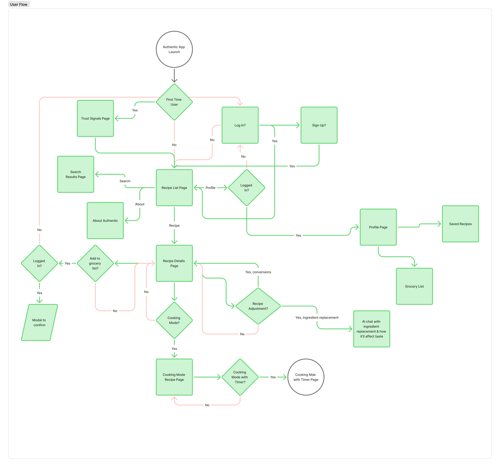
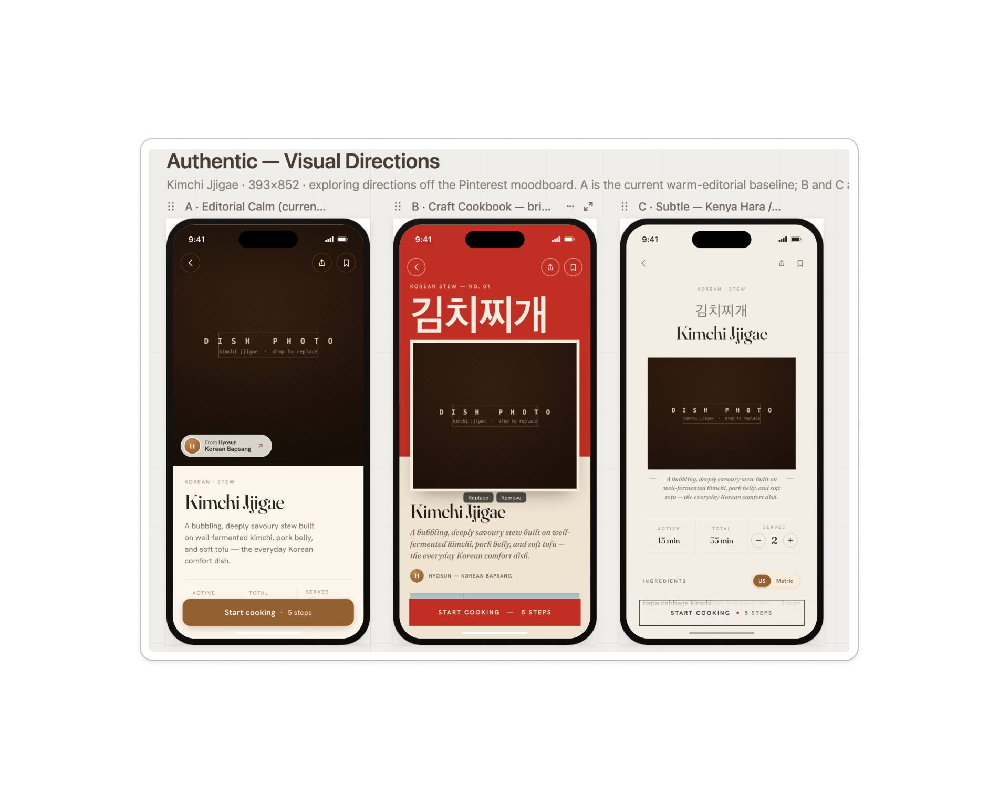
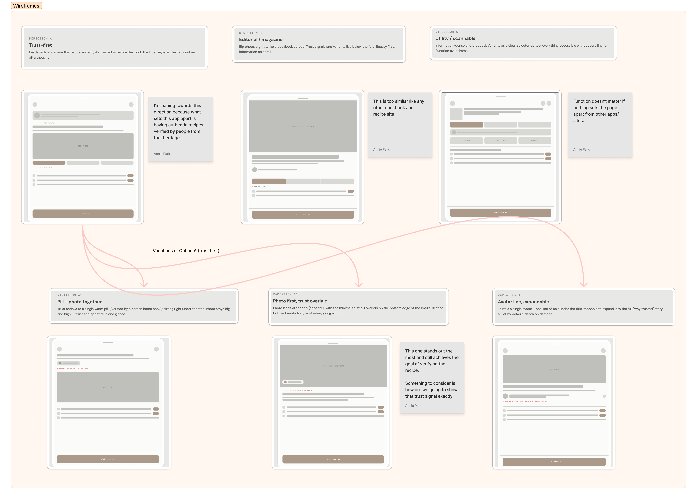
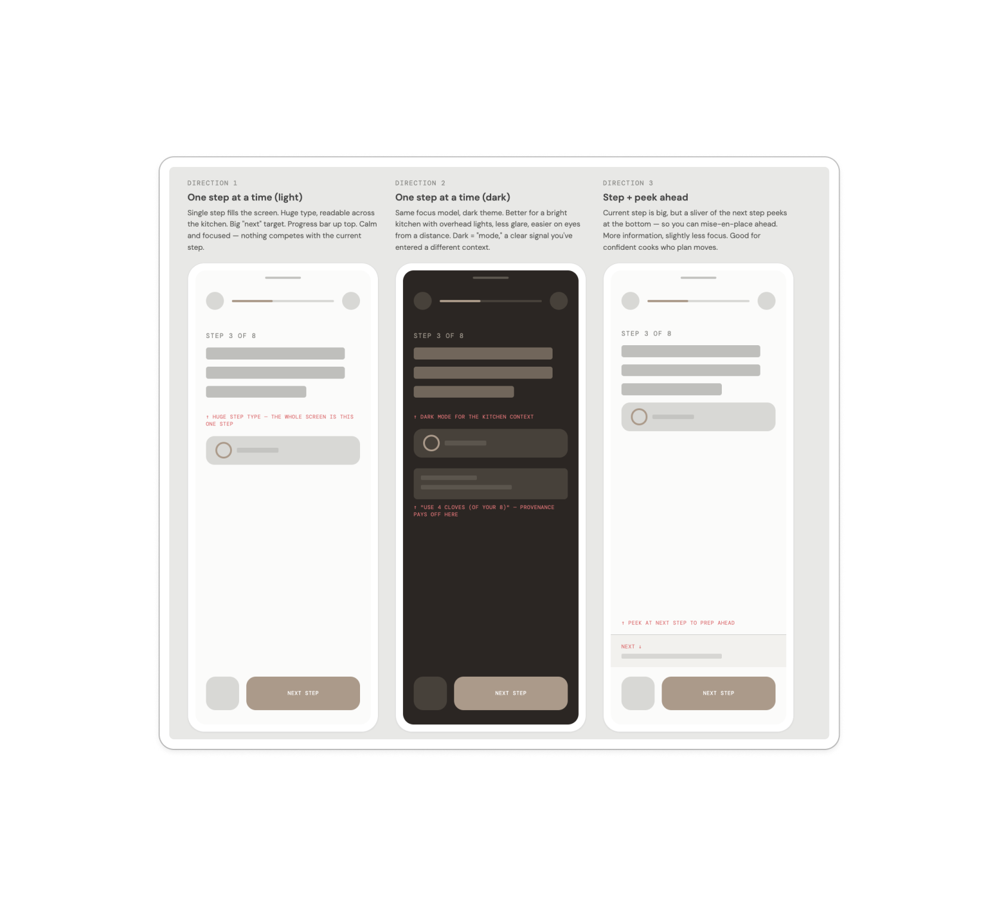

A curated search engine for authentic Asian recipes, for experienced cooks whose dishes keep tasting off because the recipe was wrong.
"The recipe a knowledgeable friend would send you,
without needing that friend."
A self-directed iOS concept. I designed two surfaces on top of a design system: Recipe Detail, where a cook decides whether to trust the recipe, and Cook Mode, where they use it. It's mid-fidelity on purpose, so the focus is on the decisions.
Full scope of Find → Read → Cook, mapped before any screens. Sign-in only appears when a user tries to save.

You can find a Kimchi Jjigae recipe in seconds. Maangchi has millions of fans. Cultural authorship is visible. But a good cook still can't tell, before buying ingredients, whether a recipe will taste right.
The market splits into broad curated apps (NYT Cooking, Epicurious) and culturally specific but unvetted sources (Maangchi, Woks of Life). The top-right quadrant (curated and culturally specific) is empty.
Three signals from secondary research (no user interviews yet): forums, cooking blogs, and a Reddit thread that went unanswered for a year.
"I've tried Maangchi's recipe, Seonkyoung Longest's, and Aaron & Claire on YouTube. My wife thinks they're just ok. Maybe it's me."
He used popular, culturally authentic sources and still couldn't get it right, so he blamed himself. The thread got one unhelpful reply in a year. This post sums up why I designed Umami: people need someone to vet the sources for them.
"Many sites are run by people posting random ideas, hoping to land on page one of a search engine. Throwing keywords into a recipe doesn't guarantee flavour or accuracy."
SEO rewards volume, so search often shows weaker recipes first. A curated layer on top of search addresses that.
"I get tired of sites that parrot what the other cooking blogs say. I'm looking for a bit more authenticity. Any ideas?"
Experienced cooks already solve this by collecting trusted sources over years. Umami gives everyone that list from day one.
I built the design system before any screens, so palette, type, and spacing work together across the app.
Three visual directions evaluated before committing: Editorial Calm (muted, Kinfolk-adjacent), Craft Cookbook (warm, tactile, handmade), and Subtle (restrained, type-led). I chose Craft Cookbook because it felt the most trustworthy without being clinical or trendy.

Recipe Detail is where a cook decides whether to make the dish. It needs to build trust quickly and stay out of the way.
The main layout question was where to put trust signals: in the body text, in a separate block, or as attribution above the fold. My annotation sums up the choice: "attribution = trust, not followers."

The first screen answers two questions: "Is this the right dish?" and "Should I trust this recipe?" The hero image answers the first, and attribution answers the second.
Two controls most recipe apps lack: scaling and unit conversion. They decide whether someone can actually use the recipe.
Most substitution features answer "what can I use instead?" Umami also shows how much each swap changes the dish.
Cook Mode is the most complex part of the app. It covers kitchen readability, saved progress, per-step timers, and exit confirmation, all within iOS conventions.
Three Cook Mode layouts evaluated: light surface (legible at desk, high glare at counter), dark surface (high contrast, kitchen-readable from distance), and peek-ahead (shows the next step before you need it). I chose dark because it's easier to read at arm's length in a bright kitchen.

Cook Mode is a full-screen modal cover with a single ✕ to close. That follows iOS conventions for a separate mode, and makes leaving a deliberate action.
Closing Cook Mode past step 1 triggers an iOS action sheet: Save & Exit (keeps your place in state) or Discard Progress (destructive, shown in red per iOS convention). Returning to the recipe later offers Resume at Step N or Cook Again. Progress is saved, because cooks get interrupted.
Cook Mode is dark because kitchens are bright. A white screen causes glare at arm's length. Dark, high-contrast, large type is readable from across the counter, and the change in look also signals a different mode.
Finishing the last step yields a dish complete screen first. Then it offers Save, a 5-star rating, and Share. That's the natural time to ask for a rating.
Users expect apps to behave like the rest of their phone. These decisions keep Umami feeling native.
The prototype tests structure and interactions before hi-fi work begins.